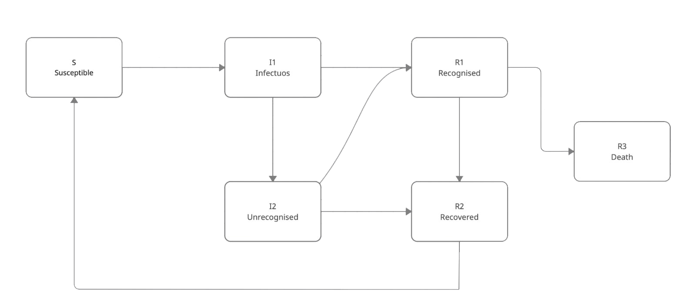

{% extends "layout.html" %}
{% block title %}
SIIR - Q
{% endblock %}
{% block main %}
SIIR
Modello base a compartimenti. Costituito da 4 compartimenti: Susceptibles - Infectous - Infectous - Recovered

Con questo modello sono proposte le seguenti funzioni:
- TRAIN: si ha la possibilità di allenare la Q-Table impostando manualmente alcuni parametri, di cui si parlerà in seguito
- RUN: si ha la possibilità di testare alcuni episodi usando una Q-Table già allenata. Anche in questo caso si è offerta la possibilitàdi tuning
- SHOW: rappresentazione dei grafici ottenuti da una delle due opzioni precedenti
Dopo aver fatto partire la funzione di elaborazione desiderata (TRAIN/RUN) non cambiare tab all'intenro dell'app
{% endblock %}